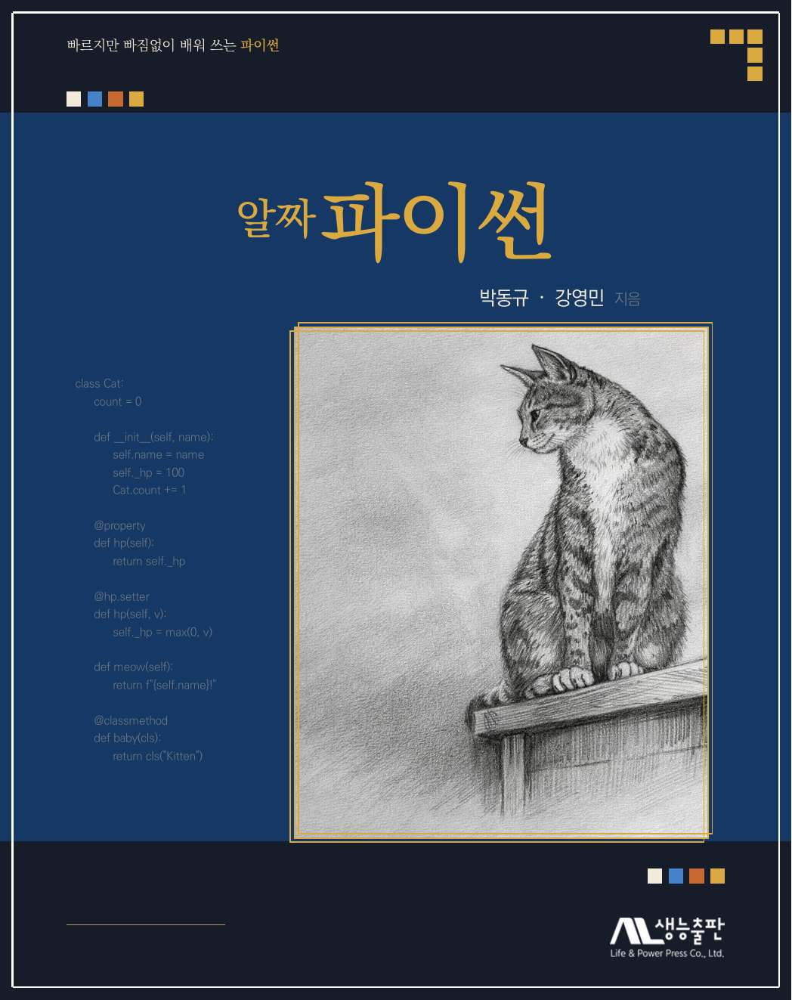

머릿말
이 책 『알짜 파이썬』은 파이썬을 빠르게, 그러나 제대로 배우고자 하는 독자를 위해 준비하였습니다. 시중의 많은 파이썬 교재는 두 극단에 놓여 있습니다. 어떤 책은 기초부터 응용까지 모든 것을 담으려다 분량이 방대해져 한 학기 수업이나 독학으로 소화하기 어렵고, 어떤 책은 입문자 수준의 가벼운 문법 설명에 그쳐 정작 실전에서 필요한 내용을 다루지 못합니다. 이 책은 그 사이에서 균형을 찾아, 빠르게 학습하되 파이썬의 알짜는 하나도 놓치지 않는 교재를 목표로 하였습니다.
『알짜 파이썬』은 파이썬의 핵심 개념을 12개 장으로 압축하면서도, 단순한 문법 요약에 그치지 않고자 하였습니다. 특히 IV부 "한 걸음 더"에서는 배운 문법을 실전으로 연결하는 실용적인 응용 주제를 담았습니다. 파이썬다운 코딩 기법과 넘파이, 실생활에 활용 가능한 응용 프로그램 제작, 그리고 판다스와 맷플롯립을 이용한 데이터 과학 입문까지 — 빠르게 학습하되, 배운 것을 곧바로 활용할 수 있도록 구성하였습니다.
이 책의 표지와 각 장의 도입부에 실린 그림은 저자가 고양이들을 가족으로 만나 사랑을 느끼면서 처음으로 시작한 그림 그리기의 결과물입니다. 전문 화가의 솜씨와는 거리가 멀지만, 잘 하는 일이 아니라 하고 싶은 일을 두려움 없이 시작하고 세상에 내놓는 것이야말로 무엇인가를 배우는 첫걸음이라고 믿기에 용기를 내어 실었습니다. 프로그래밍도 마찬가지입니다. 처음부터 완벽한 코드를 작성하는 사람은 없습니다. 서툴더라도 자신감을 갖고 자신만의 프로그램을 작성하는 일에 도전해 보시기 바랍니다. 오류를 만나고, 고치고, 다시 실행하는 그 과정 자체가 성장입니다.
우리는 지금 인공지능이 세상을 빠르게 바꾸어 놓고 있는 혁신의 시대를 살고 있습니다. 이 변화의 중심에는 프로그래밍이 있으며, 그 출발점에 파이썬이 있습니다. 인공지능, 데이터 분석, 자동화 등 새로운 기술의 물결에 빠르게 대처하기 위해서는 프로그래밍의 기본기를 탄탄히 다지는 것이 무엇보다 중요합니다. 이 책이 독자 여러분의 빠르고 효과적인 파이썬 학습에 든든한 길잡이가 되기를 진심으로 바랍니다.
끝으로, 이 책이 나오기까지 많은 도움을 주신 생능출판사 관계자 여러분께 깊이 감사드립니다.
저자 일동
이 책의 구성
전체 구성
이 책은 4개의 파트, 12개의 장으로 이루어져 있습니다.
- I부 파이썬 시작 (1–3장) 파이썬 개발 환경, 변수·연산자·문자열, 조건문·반복문을 배웁니다.
- II부 함수와 자료구조 (4–6장) 함수, 리스트·슬라이싱, 딕셔너리·튜플·집합 등의 자료구조를 학습합니다.
- III부 실전 활용 (7–9장) 모듈, 예외 처리·파일 입출력, 클래스와 객체지향 프로그래밍을 다룹니다.
- IV부 한 걸음 더 (10–12장) 파이썬의 실용 응용, 파이썬다운 코딩과 넘파이, 데이터 과학 입문을 다룹니다.
각 장의 구성
모든 장은 다음과 같은 일관된 흐름으로 구성되어 있습니다.
- 챕터 도입부 장식 숫자와 그림, 그리고 해당 장을 학습한 뒤 할 수 있게 될 목표를 정리한 이 장을 마치면 박스로 구성됩니다.
- 본문 개념 설명, 코드 예제, 실행 결과를 통해 파이썬 문법과 활용법을 단계적으로 학습합니다.
- 이 장의 실습 장의 마지막에 다섯 문제 내외의 실습을 모아 제시하며, 바로 이어지는 해답 코드를 함께 수록하여 자가 학습이 가능하도록 하였습니다.
- 요약 해당 장에서 배운 핵심 내용을 항목별로 정리하여 복습에 활용할 수 있습니다.
- 연습문제 배운 내용을 스스로 점검할 수 있는 다양한 유형의 문제를 제공합니다.
본문에 사용된 특수 박스
본문에는 내용에 따라 다음과 같은 색상·스타일의 박스가 등장합니다. 좌측 얇은 색 바와 상단 색상 칩 태그로 종류를 구분할 수 있으며, 박스마다 고유한 역할이 있습니다.
- 요점 해당 절에서 반드시 기억해야 할 핵심 개념을 강조합니다. 카퍼 색 좌측 바와 요점 태그로 표시됩니다.
- 주의 초보자가 자주 실수하는 부분이나 흔히 빠지는 함정을 경고합니다. 코럴 색 좌측 바와 주의 태그로 표시됩니다.
- 잠깐 제목 보충 설명이나 심화 정보를 담습니다. 바이올렛 색 좌측 바와 잠깐 태그 뒤에 해당 내용을 요약하는 소제목이 붙습니다.
- 실습을 통한 개념 정리 각 장 마지막에 배치되는 실습 박스입니다. 민트 틴트 배경에 상단 제목 칸이 있으며, 문제와 해답 코드를 함께 담고 있습니다.
15주 학습 계획
이 책은 한 학기(15주) 강의에 맞추어 설계하였습니다. 3장은 분량이 많아 2주를 배정하고, 8주차에 중간 점검을 두었습니다.
| 주 | 학습 내용 | 비고 |
|---|---|---|
| 1 | 1장 파이썬 소개와 개발 환경 | 파이썬 설치, 첫 프로그램 |
| 2 | 2장 변수, 연산자, 문자열 | 기본 자료형과 연산 |
| 3 | 3장 조건문과 반복문 (전반) | if 문, for 문 |
| 4 | 3장 조건문과 반복문 (후반) | while 문, 중첩 반복 |
| 5 | 4장 함수와 입출력 | 함수 정의, 매개변수, return |
| 6 | 5장 리스트와 슬라이싱 | 리스트 생성, 조작, 슬라이싱 |
| 7 | 6장 딕셔너리, 튜플, 집합 | 주요 자료구조 비교 |
| 8 | 중간 점검 | 1–6장 복습 및 중간고사 |
| 9 | 7장 모듈 활용 | 표준 라이브러리, pip |
| 10 | 8장 예외 처리와 파일 | try–except, 파일 입출력 |
| 11 | 9장 클래스와 객체 | 객체지향 프로그래밍 기초 |
| 12 | 10장 파이썬의 응용 | 실용 프로그램 제작 |
| 13 | 11장 파이썬다운 코딩과 넘파이 | 컴프리헨션, 람다, 넘파이 |
| 14 | 12장 데이터 과학과 파이썬 | 판다스, 시각화, 머신러닝 |
| 15 | 기말 점검 | 7–12장 복습 및 기말고사 |
무엇보다 중요한 것은 매 장의 예제 코드를 직접 입력하고 실행해 보는 것입니다. 프로그래밍은 읽는 것만으로는 익힐 수 없으며, 손으로 코드를 작성하고 오류를 수정하는 과정에서 실력이 향상됩니다.